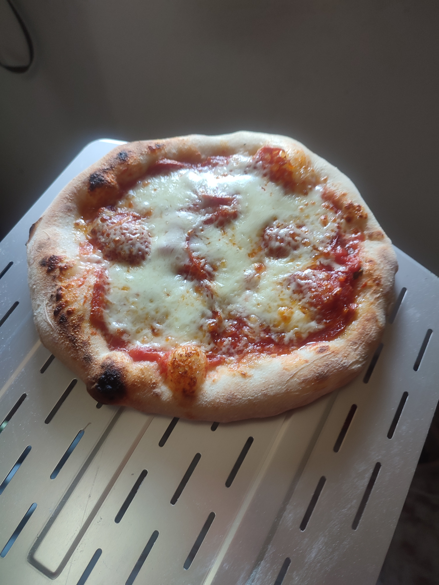

Neapolitan Pizza

This is neapolitan style pizza, a recipee which is suited to be baked at home, using the poolish method.
Ingridients:
- Flour
- Yeast
- Water
- Salt
- Honey
Steps
- in a container sip 10gr of fresh yeast,300 gr of flour and 300ml of water and a teaspoon of honey then mix it and leave 1hour at room temperature and 16-20h in the fridge.
- In a bowl put 700ml of water then melt the poolish inside the water
- add 1250gr of flour and knead the dough
- let kneaded dough rest for an hour on room temperature
- make pizza balls
- let the balls rise for an hour
- stratch the pizza dought and add toppings and bake it
Back